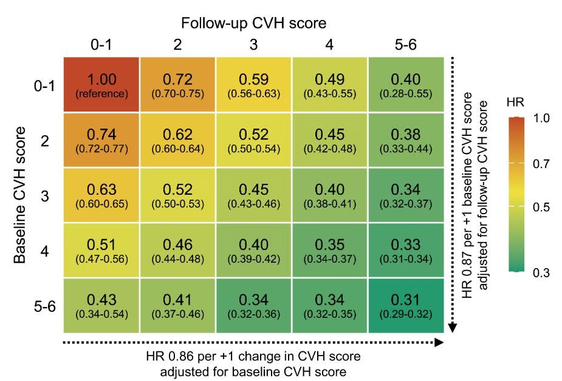

Cardiovascular, kidney, and metabolic health are all intimately linked.
The umbrella term is "CKM syndrome". You can argue that they are, in aggregate, the same disease.
#kidneysHD #ckmHD #metabolicsyndromeHD
#insulinresistanceHD #cvdHD
Louis shares the AHA's cardiovascular-kidney-metabolic syndrome initiative, and argues heart, kidney and metabolic disease are in aggregate one disease.
Cardiovascular, kidney, and metabolic health are all intimately linked.
The umbrella term is "CKM syndrome". You can argue that they are, in aggregate, the same disease.
#kidneysHD #ckmHD #metabolicsyndromeHD
#insulinresistanceHD #cvdHD
At least 3 in 4 US adults may have reversible cardiovascular-kidney-metabolic (CKM) syndrome. Learn to identify and intervene.

Louis shares a 2025 proposal that metabolic liver disease, diabetes, cardiovascular and kidney disorders form a single progressive syndrome rooted in dysfunctional adipose tissue and ectopic fat, and argues for early intervention beyond single risk factors.

Louis describes a vicious cycle in which weight gain and liver fat raise insulin through insulin resistance, which in turn promotes more weight gain and liver fat, often ending in obesity, fatty liver, diabetes and heart disease. He says breaking it requires a diet that removes excess abdominal and liver fat.

A shared post notes that SGLT2 inhibitors protect heart and kidneys beyond glucose control, and that emerging research suggests influences on inflammation, mitochondrial function, autophagy, AMPK and mTOR. It is largely promotional for a blog, and Louis added only hashtags.

Louis shares a mechanism summary: SGLT2 inhibitors improve endothelial function, reduce macrophage infiltration and inflammatory mediators (TNF, IL-6, MCP-1) and protect the heart and kidneys in metabolic disease.

Louis stresses that kidney and cardiovascular health are tightly linked: kidney disease raises CVD risk and protecting against atherosclerosis lowers the risk of kidney disease. The shared American Journal of Kidney Diseases study (Lee et al) found young adults with better cardiovascular health had lower later risk of both conditions, and improving or maintaining it helped.

Louis notes that kidney disease is a major risk factor for CVD and dementia and that the latest AHA risk calculator now includes eGFR. A shared review describes the kidney's crosstalk with the heart, brain, gut, liver and lungs.